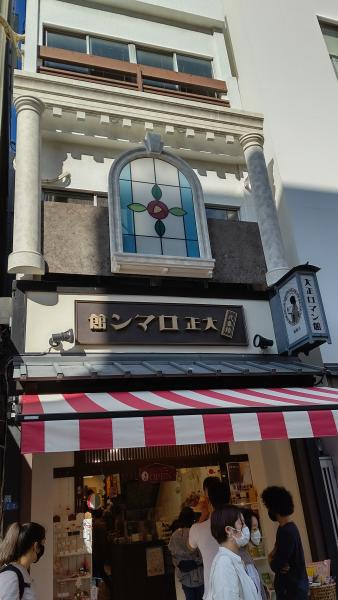
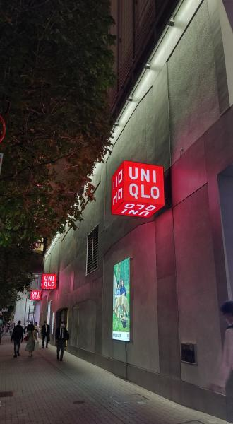
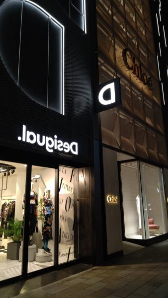

HOME
degifab
デザイン演習
degifab課題
第一回 1-1
第一回 1-2
第ニ回
スケッチ
第三回
第四回
演習課題
第一回
第二回
第三回
第四回
第五回
第六回
第七回
第八回
第九回
第十回
第十一回
第十二回
第二回課題 看板
目次
大正ロマン館
ユニクロ
Desigual
1 大正ロマン館

10月10日に浅草で自分が取った写真。
店の名前に合わせて大正風の看板になっている
2 ユニクロ

同日、銀座で自分が取った写真
看板のUNIQLOの文字が動く、色が赤、黒と変わる
3 Desigual

同日、銀座で自分が取った写真
看板の文字が鏡写の文字になっている。